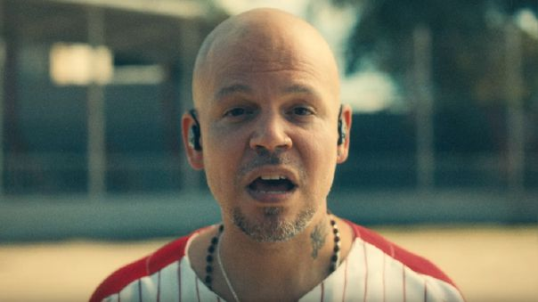

"Una noche me sentía muy muy mal, no quería salir a tocar, estaba en México, el estadio esperándome, y yo no quería estar ahí. Tuve que llamar a mami, me sentía mal y no sabía por qué. Quería tirarme del balcón y no sabía por qué. Gracias a Dios esa noche llegaba un amigo de mi universidad y se quedó conmigo. Al otro día comencé a escribir este tema".
Ese "tema" del que hablaba en redes sociales es su última canción, titulada "René", y probablemente su obra más íntima hasta la fecha: una vuelta a sus orígenes en Puerto Rico, y un sincero y conmovedor repaso a sus miedos, sus pérdidas o sueños más anhelados.
Ese "tema" del que hablaba en redes sociales es su última canción, titulada "René", y probablemente su obra más íntima hasta la fecha: una vuelta a sus orígenes en Puerto Rico, y un sincero y conmovedor repaso a sus miedos, sus pérdidas o sueños más anhelados.
"Es el tema más importante de mi vida a nivel personal", subrayó el exitoso rapero de forma previa a la publicación de "René", en sus redes sociales.